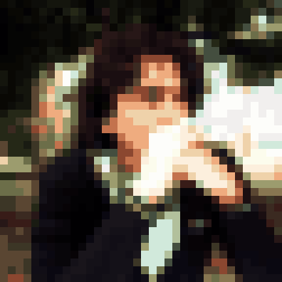

MY INTERNET HANGOUTTHE DIRECTORY ▾
IRC chat / #brun3y
Project talk. Pixel-sized opinions.
Internet radio
Code sounds better with distortion.
Code & personal projects
AI agents, quantum experiments & open-source rabbit holes.
CHAT / RADIO / CODE / PERSONAL PROJECTS
My little corner of the internet.

@BrUn3y · Zapopan, MX
AI / QUANTUM / OPEN SOURCE
Project talk. Pixel-sized opinions.
Code sounds better with distortion.
AI agents, quantum experiments & open-source rabbit holes.